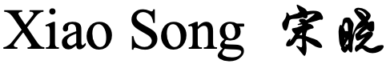
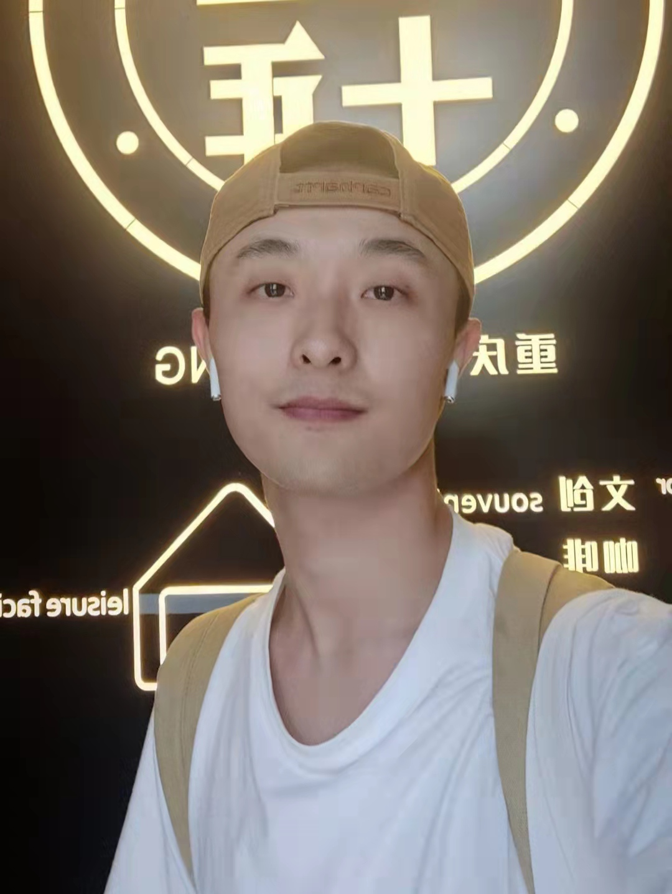

|

Ph.D. Student
Nanjing University
School of Intelligence Science and Technology Suzhou, Jiangsu Province, P.R.China Email: x.song.matt[at]gmail.com; x.song[at]smail.nju.edu.cn I am looking for collaborations on Multimodal AI.

 [CN]
[CN]
|
 |
Biography
I am now pursuing my Ph.D. studies at Nanjing University under the supervision of Prof. Caifeng Shan and Assi. Prof. Yuqi Fang. Prior to this, I served as a full-time research assistant at the Shenzhen Institute of Advanced Technology, Chinese Academy of Sciences, working under the direction of Assoc. Prof. Ruxin Wang. In 2023, I completed my Master's degree at Beijing University of Technology, where I was fortunate to be advised by Assoc. Prof. Xiaodan Zhang and co-advised by Prof. Junzhong Ji.
My research interests lie in Multi-modal (CV, NLP, etc.) Learning and Causality in Biomedical Informatics. Currently, I also possess an interest in the Large Language Models and their applications for Healthcare.
News
- [09/2024] One paper was accepted by ACM-BCB (Oral), a flagship conference on Bioinformatics.
- [09/2024] I joined Nanjing University, Suzhou Campus.
- [07/2023] I joined Shenzhen Institute of Advanced Technology, Chinese Academy of Sciences.
- [06/2023] I got my Master's degree. My thesis received A marks from all 3 anonymous reviewers from external schools.
- [02/2023] One paper was accepted by JVCIR.
- [08/2022] One paper was accepted by COLING 2022 (Oral), a top conference on NLP.
- [06/2022] One paper was accepted by China Sciencepaper.
Publications | Google Scholar
-
Rethinking Radiology Report Generation via Causal Inspired Counterfactual Augmentation.
Xiao Song, Jiafan Liu, Yun Li, Yan Liu, Wenbin Lei, Ruxin Wang.
ACM BCB (Oral), 2024, Article No.5, 1–10. [paper] -
Multi-scale Superpixel based Hierarchical Attention Model for Brain CT Classification.
Xiao Song, Xiaodan Zhang, Junzhong Ji, Ying Liu.
J. Vis. Commun. Image R. (JVCIR), 2023, 91:103773. [paper] -
Cross-modal Contrastive Attention Model for Medical Report Generation.
Xiao Song, Xiaodan Zhang, Junzhong Ji, Ying Liu, Pengxu Wei.
COLING (Oral), 2022:2388–2397. [paper] -
Brain CT Image Classification Based on Multi-scale Superpixel Fusion Network.
Junzhong Ji, Menglong Zhang, Xiao Song, Xiaodan Zhang.
China Sciencepaper, 2022, 17(11):1173-1180+1187. [paper]
- 宋晓(Xiao Song), 王如心. 基于反事实数据增强的放射学报告生成方法. CN202311704996.X
- 张晓丹, 宋晓(Xiao Song), 冀俊忠. 一种基于跨模态对比注意力机制的医学报告自动生成方法. CN202210563429.6
Projects
-
Optimization Modeling and Causal Methods for Multimodal Medical Imaging Analysis. 2025-2028.
Funded by: National Natural Science Foundation of China. Role: Collaborator -
Evaluation System and Optimization Modeling of Trustworthy Medical Large Language Models. 2025-2026.
Funded by: Jiangsu Provincial Department of Education. Role: Principal Investigator
Teaching
| 2025 Spring | TA | Natural Language Processing | @ NJU |
Honors & Rewards
Graduate Science and Technology Innovation Award (Excellent Award), BJUT, 2024.
Excellent Master's Thesis (My thesis received A marks from all 3 anonymous reviewers.), BJUT, 2023.
Outstanding Graduate, BJUT, 2023.
Graduate Science and Technology Innovation Award (First Prize), BJUT, 2023.
Graduate Academic Scholarship (Top 10%), BJUT, 2021.
National College Students Mathematical Competition (First Prize), CMS, 2019.